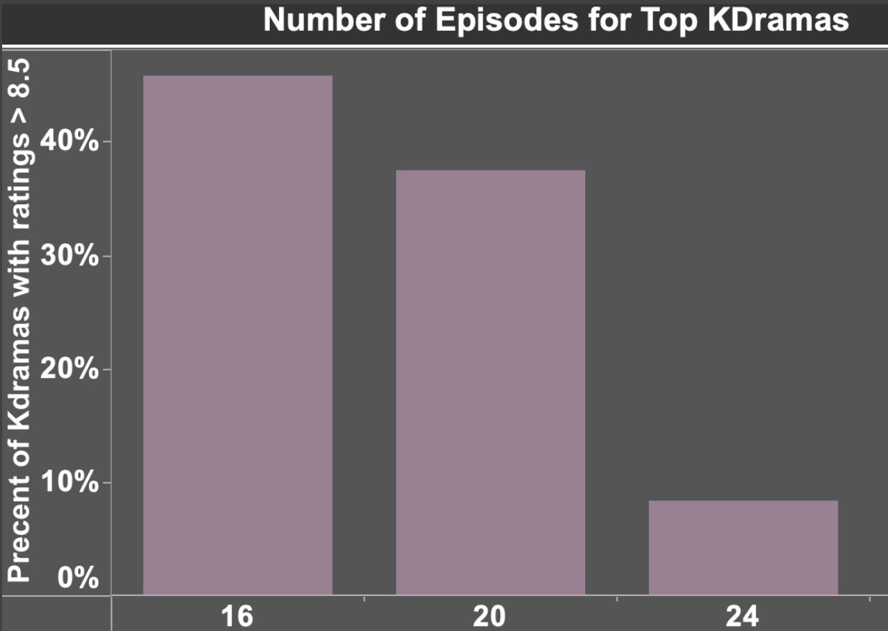
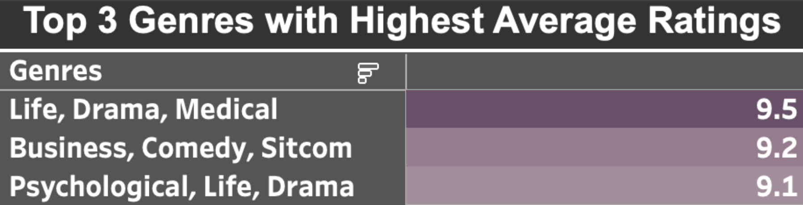

Key Findings: Producers should explore crafting dramas with 16 episodes within the genres of Life, Drama, and Medical.
- K-Dramas with 16 episodes on average have a better chance of reciving a rating of 8.5 or higher
- Life, Drama, and Medical K-Dramas on average have the highest rating of 9.5
Companies should consider producing K-Dramas that have 16 episodes and focus on the following genres Life, Drama, Medical. To generate more viewers and higher ratings. Also to stop Netflix from dominating the market!
Figure 1: We see that 47% of K-Dramas that have 16 episodes have a rating of 8.5 or higher.
If producers of K-Dramas use these insights then the K-Drama is more likley to have an increase in viewership and receive better ratings.
 Figure 2: K-Dramas that have a combination of these genres have a better chance of receiving higher ratings